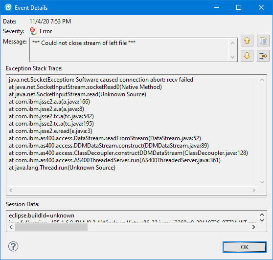

Sometimes it happens, that source members are locked when you try to open the LPEX editor or the Source File Compare/Merge Editor.
For the compare editor, the problem can be reproduced by following these steps:
Now, when the compare editor is closed, iSphere attempts to close the left-side member. Since that fails with an exception, iSphere appends the following message to the Eclipse error log:

The only way to clear the error is to end the job on the IBM i server by hand.